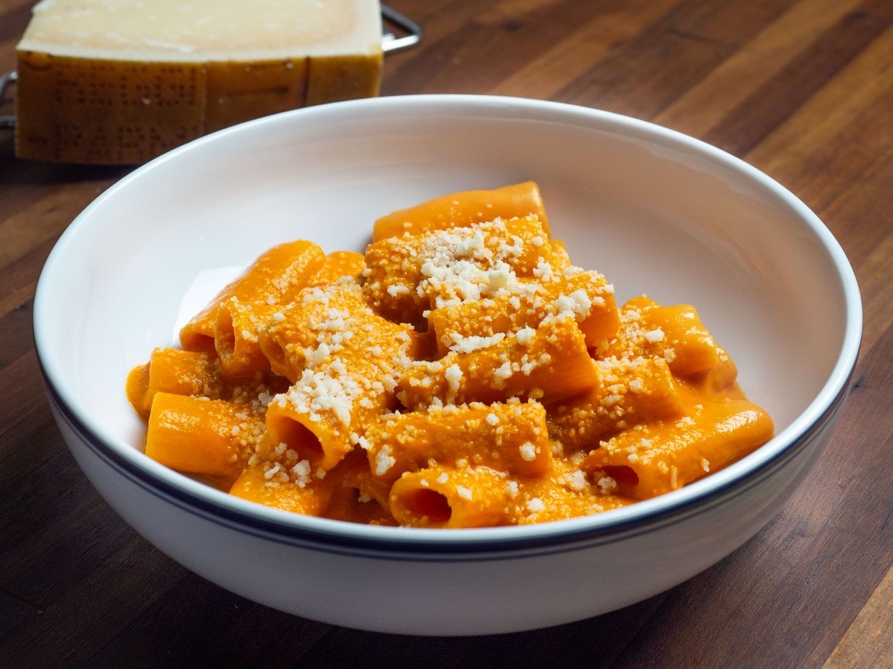

Authentic Penne Alla Vodka

A Little Taste From Italy
This authentic Penne Alla Vodka recipe will make you feel like you are
sitting on the Amalfi coast overlooking a bay of the bluest water in the world.
Penne Alla Vodka is a staple of Italian cuisine, and it is so easy anyone can make it.
With just 40 minutes of time you can have a delicious pasta dish that is sure to wow your
friends and family.
Ingredients
- 3 tbsp. butter
- 1 shallot, minced
- 2 cloves garlic, minced
- 1/2 c. tomato paste
- 1/2 tsp. crushed red pepper flakes
- 2 tbsp. vodka
- Kosher salt
- 1 lb. tubed pasta, such as penne or rigatoni
- 1/2 c. heavy cream
- 1/2 c. freshly grated Parmesan, plus more for serving
- Basil, for serving
Steps
- Step 1
In a large skillet over medium heat, melt butter.
Add shallot and garlic and cook, stirring frequently, until softened, 4 to 5 minutes.
- Step 2
Add tomato paste and red pepper flakes and cook,
stirring frequently, until paste has coated shallots and garlic and is beginning to darken,
5 minutes.
- Step 3
Add vodka to pot and stir to incorporate, scraping up any browned
bits from the bottom of the pot. Turn off heat.
- Step 4
Bring a large pot of salted water to a boil and cook pasta until al dente.
Reserve 2 cups of pasta water before draining.
- Step 5
Return sauce to medium heat and add 1/4 cup of pasta water and heavy cream,
stirring to combine. Add half the Parmesan and stir until melted. Turn off heat and stir in cooked pasta.
Fold in remaining Parmesan, adding more pasta water (about a tablespoon at a time) if the sauce is looking dry.
Season with salt if needed. Serve topped with more Parmesan and torn basil leaves.
- Step 6
Now enjoy your authentic Penne Alla Vodka!